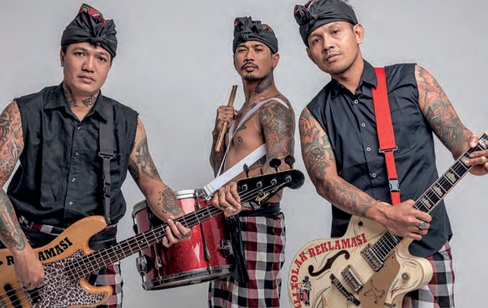

Musisi Indonesia banyak mengadopsi budaya barat dalam berkarya. Sebagai negara bagian dunia ketiga, kita memiliki banyak ketertinggalan dalam soal ekonomi dibanding dengan negara-negara maju. Akhirnya musik kelas bawah di belahan utara bumi diadaptasi oleh kelas menengah di Indonesia. Karena kelas menengah memiliki kesempatan lebih untuk mengintip perkembangan dunia musik luar negeri ketika itu.
Tak heran Presiden Soekarno kala itu pernah memenjarakan Koes Plus, karena musiknya dituduh identik dengan budaya kapitalisme internasional. Soekarno dengan padangan politiknya melihat musik Koes Plus bukan hal yang penting bagi kelas bawah di Indonesia. Koes Plus juga tak salah jika mengadaptasi musik yang menurut mereka mengekspresikan kebebasan.
Pada tahun 70an perkembangan musik di belahan utara bumi melaju cepat, memacu juga perkembangan musik di tanah air. Guruh Gipsy, Gang Pegangsaan, God Bless, Giant Step, Super Kid, The Rollies, dll adalah sederet nama yang bisa disebut sebagai peletak pondasi musik Indonesia pada masa kontemporer. Secara musikalitas mereka adalah maestro-maestro dunia musik Indonesia. Mereka juga mempopulerkan semangat kemerdekaan (independent / indie) dalam berkarya. Walau pada jaman itu belum ada manajemen musik yang cukup bagus, tapi dengan pengalaman seadanya mereka mulai bekerja sama membangun jaringan. Hal itu dilakukan guna meluaskan musik mereka. Tercatat pula Majalah Aktuil, banyak membantu perkembangan musik pada masa 70an. Melalui tulisan dan peran aktif individu-individu di dalamnya, Aktuil mempromosikan band-band pada jaman itu.
Tetapi isu-isu sosial belum dianggap penting untuk dibicarakan dalam lirik-lirik mereka. Kalaupun ada, belum menjadi sesuatu yang dominan. Bahkan beberapa grup band (utamanya rock) masih suka memainkan karya-karya band luar negri. Ekspresi kemerdekaan akhirnya hanya menjadi penghias keseharian, gaya hidup bebas ala musisi rock pun menjadi pilihan mereka.
Pada periode 1990an, perkembangan musik underground semakin pesat. Booming Sepultura dan Metalica menginfluence anak-anak muda Indonesia. Berhadapan dengan industri mainstream yang didominasi oleh rock melayu dan artis wanita, maka jalur underground-lah yang dipilih. Dengan berbasiskan komunitas serta mengandalkan fanzine (buletin-buletin), budaya underground semakin meluas. Dimulailah pembangunan scene-scene musik alternative di masa itu.
Kota-kota besar seperti Bandung, Jakarta, Surabaya, Malang, dan Jogjakarta menjadi tempat berkembangnya komunitas-komunitas underground. Pada masa itu musik metal menjadi sebuah suguhan altenatif. Selain itu banyak band mulai berani berekspresi dengan menempatkan isu-isu sosial dalam lirik-liriknya.
PAS band memulai tradisi merilis album secara indie. Album mereka “Four Through The SAP” terjual lebih dari 5000 copy. Selanjutnya banyak band metal dan rock lain memakai metode indie. Tercatat nama-nama seperti Puppen, Koil, Burger Kill, Rotten To The Cure, dll di masa-masa awal perkembangan musik Indie kontemporer Indonesia.
Ada sekian banyak album, termasuk album-album kompilasi yang dirilis bersama oleh band-band pada jaman itu. Mereka terbantukan dengan pembangunan komunitas-komunitas musik. Begitu juga dengan fanzine (buletin) yang berfungsi untuk mempromosikan hasil karya mereka. Panggung-panggung kecil juga kerap digelar di kafe-kafe. Hal ini selaras dengan pembangunan industri kreatif kaum muda lainnya, seperti clothing dan distro.
Istilah Indie baru populer di pertengahan tahun 1990an. Awalnya Indonesia lebih mengenal istilah underground bagi musik yang ‘lari’ dari trend budaya mainstream. Perkembangan musik luar yang menghasilkan beberapa varian-varian baru seperti grunge, brit pop, hip-hop, melodic punk, dll. Hal ini menyeret anak-anak muda Indonesia pada sekian banyak pilihan bermusik. Selanjutnya di kota-kota besar, banyak bermunculan band-band serta komunitas-komunitas dengan varian musik yang beragam. Sejak saat itu istilah underground mulai digantikan dengan istilah indie. Mungkin istilah underground dirasa terlalu identik dengan musik metal. Maka istilah indie dengan kesan yang lebih modern mulai lazim digunakan.
Pure Saturday menjadi pionir band-band dengan aliran selain metal yang membuat album rekaman sendiri. Grup band ini tercatat mencetak album pertamanya pada tahun 1995 dengan tajuk “Not A Pup E.P”. Keberhasilan mencetak album ini lantas diikuti oleh sederet nama lain seperti Waiting Room, Pestol Aer, Toilet Sound, dll.
Selanjutnya booming Indie semakin menjadi, ketika Mocca (band Swing Pop asal Bandung) sukses menembus angka di atas 100.000 copy dalam penjualan kaset mereka. Keberhasilan Mocca, turut membawa dampak bagi perkembangan musik indie. Selanjutnya deretan nama seperti Puppen, Shaggy Dog, Superman Is Dead, Rocket Rockers, Superglad, dll mencuri perhatian para penikmat musik.

Bahkan beberapa nama di atas, mendapat kontrak dari label-label rekaman besar. Kontrak ini sempat menjadi perdebatan di scene-scene indie. Sebagian dari para scenester menganggap hal ini sebagai pengkhianatan terhadap idealisme independent. Sebagian lagi menganggap ini sebagai peluang memperkenalkan musik mereka secara massal.
Terlepas dari perdebatan-perdebatan tersebut, musik indie tetap mendapatkan tempat di dunia musik Indonesia. Beberapa band seperti The S.I.G.I.T, The Upstairs, The Brandals, The Milo, Bangku Taman, Efek Rumah Kaca, Teenage Dead Star, Seek Six Sick, The Adams, White Shoes And The Couple Company, dan Goodnight Electric mendapatkan tempatnya di hati para penikmat musik. Terakhir delapan album rilisan band dan label indie masuk dalam jajaran 20 album terbaik versi Rolling Stone tahun 2008. Ini membuktikan bahwa kualitas musik band-band Indie di Indonesia sangat baik. Karena mampu bersaing dengan karya band dan label besar (mainstream).
Bahkan dalam hal penyebaran karya, mereka sangat maju. Ketika industi musik mainstream berteriak soal bajakan, beberapa band Indie di Indonesia dengan bangga membagi-bagikan cd album mereka secara gratis. Metode yang bertolak belakang dengan keinginan para produser musik mainstream.
KOIL merilis album “Black Shines On”, membagikannya sebagai bonus Majalah Rolling Stone Indonesia. Langkah ini diikuti oleh Naif dan Rosewood. Sebelumnya The Upstairs melepas lagu mereka secara gratis lewat situs Myspace. Langkah ini meniru band-band luar negeri (Radiohead, Coldplay, dan Metallica).
Semangat-semangat perlawanan juga masih terdengar dalam lirik-lirik band indie di Indonesia. Terakhir kita dengar Efek Rumah Kaca yang lugas dalam merekam realitas sosial. Lagu ‘Di Udara’ misalnya, bercerita soal kematian Munir. Selanjutnya ada ‘Cinta Melulu’, yang mengkritik soal budaya latah musisi Indonesia dalam membuat lirik-lirik lagu cinta. Hits lainnya ‘Jalang’, mengkritik kebijakan UU Pornografi dan Pornoaksi.
Ras Muhammad dengan musik reggae-nya pantas juga disebut sebagai musisi indie yang concern berbicara soal realitas-realitas sosial. Belum lagi jika menyebut beberapa band punk seperti Marjinal dan Bunga Hitam yang hampir setiap lirik lagunya berbau kritik sosial. Hal yang sama juga masih dilakukan oleh band-band lain, seperti Burger Kill, KOIL, Seringai, Komunal, dll. Untuk band-band seperti ini kita pantas mengucap salut. Mereka benar-benar mengadopsi idealisme indie dalam bermusik. Idealisme yang bukan hanya sekedar dimaknai dalam proses distribusi dan produksi kaset / cd, tapi juga dalam karya mereka yang jujur dalam merekam realistas sosial.